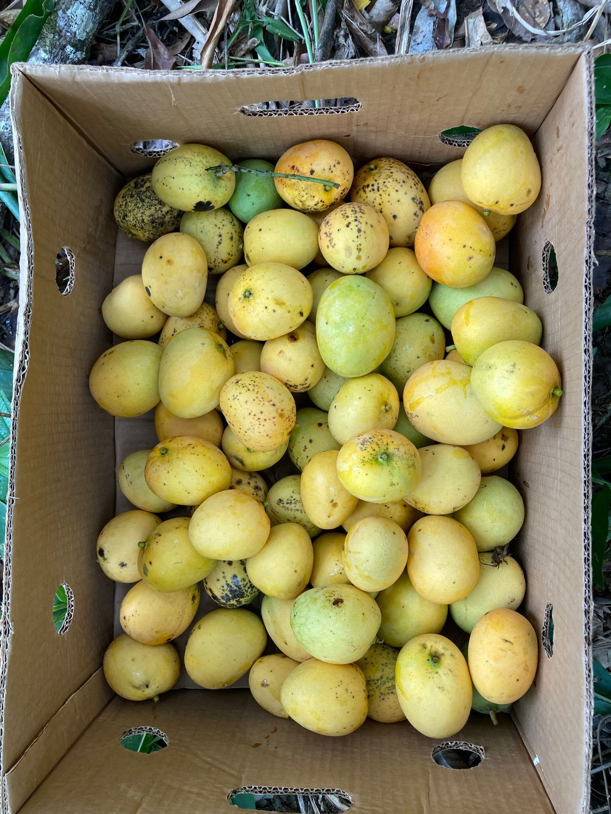

Export-Grade Starch Mangoes
Direct from Sangre Grande, Trinidad

Our premium mangoes are currently being verified for the upcoming export tranche.
Check the DNA Analyzer tab to see current batch hashes and lab compliance data.
Direct from Sangre Grande, Trinidad

Our premium mangoes are currently being verified for the upcoming export tranche.
Check the DNA Analyzer tab to see current batch hashes and lab compliance data.